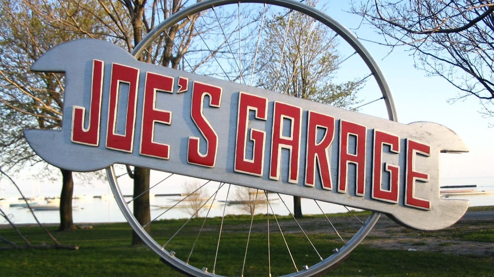

Reviews
Home | About | Rentals | Prices | Photos | Reviews
| 
Media coverage CTV August 13, 2015 "Bow River pathway cyclists embrace mobile repair shop" Beatroute magazine May 14, 2015 "Mobile service from Joe’s Garage can fix your bike on the spot" Beatroute magazine July 2009 Joe's Garage - fixing your bike on the run Swerve magazine September 18, 2009 |
Joe@joesgarage.mobi
© Copyright 2023 Joe's Garage, Calgary, Alberta, Canada